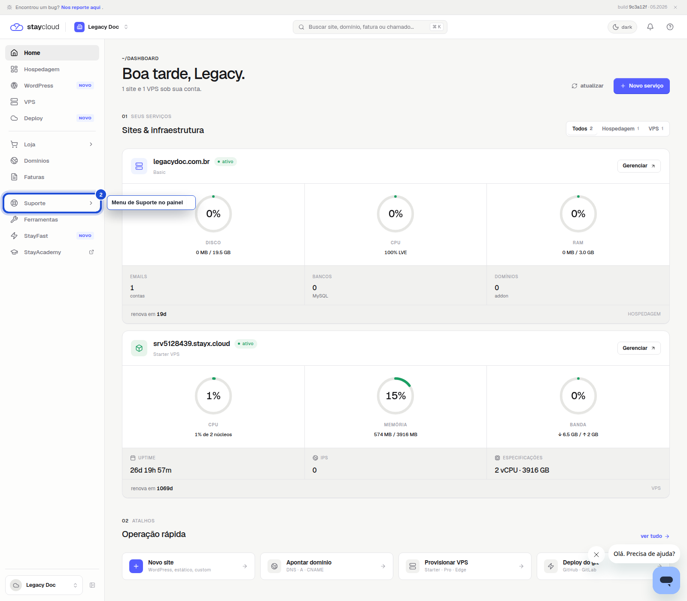
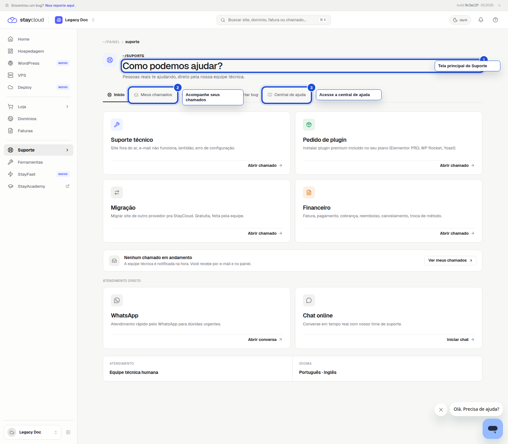
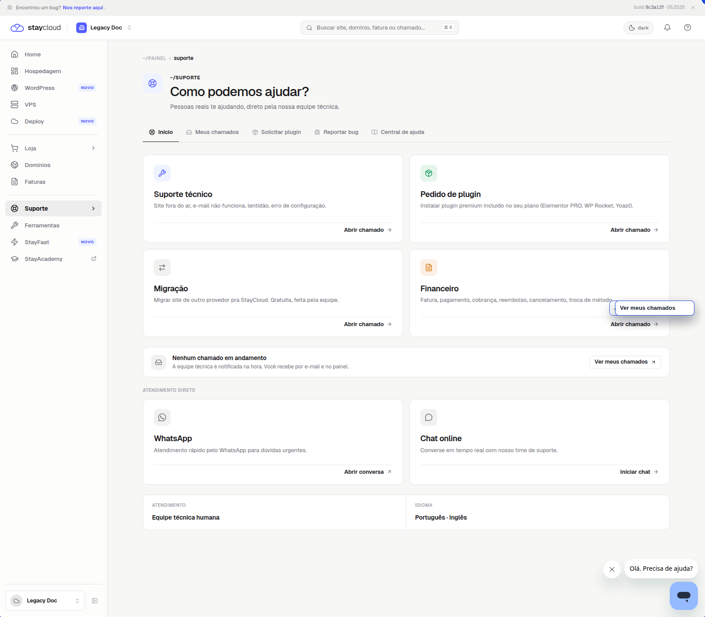
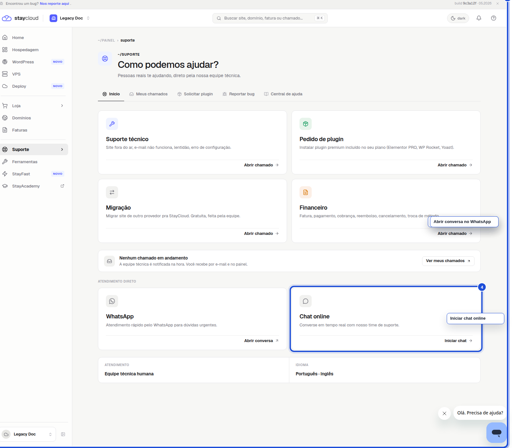

Como localizar a area de Suporte no Painel Novo da StayCloud
Se você precisar falar com a StayCloud, abrir um chamado ou consultar a ajuda da sua conta, a area de Suporte e o caminho certo.
Neste tutorial, você vai ver exatamente onde clicar no Painel Novo para chegar ate a tela de suporte e acessar os canais disponiveis.
Quando usar este tutorial
Use este passo a passo quando quiser encontrar a area de Suporte, abrir um chamado, ver seus chamados em andamento, acessar a central de ajuda ou falar com a equipe por WhatsApp ou chat.
Antes de comecar
Antes de seguir, entre na sua conta da StayCloud e confirme que voce esta no Painel Novo.
Se a tela inicial estiver carregando, espere alguns segundos antes de clicar em outra opcao.
Passo a passo
1. Abra o Painel Novo
Depois de fazer login, voce ve a tela inicial com o menu lateral e a lista de servicos da sua conta.

Nessa tela, clique em Suporte no menu lateral.
2. Entre na area de Suporte
Ao abrir Suporte, confira se a tela mostra o titulo Como podemos ajudar?.

Essa e a tela correta para abrir chamados, consultar ajuda e acompanhar atendimentos.
3. Veja as opcoes de atendimento
Mais abaixo, voce encontra as opcoes de atendimento por assunto e os botoes para abrir ou acompanhar solicitacoes.

Clique em Abrir chamado se quiser enviar uma solicitacao nova.
4. Escolha um canal rapido, se preferir
Na mesma pagina, voce tambem pode usar os canais diretos de atendimento.

Escolha WhatsApp ou Chat online se quiser atendimento rapido.
Erros comuns
Entrar na area errada do painel e nao encontrar os canais de suporte.
Procurar por cPanel, quando a area correta e o proprio Painel Novo.
Passar direto pela tela principal sem conferir se esta em Como podemos ajudar?.
Tentar abrir chamado em outra area do painel.
Quando abrir ticket
Quando a duvida nao estiver resolvida na central de ajuda.
Quando voce precisar de analise da equipe tecnica.
Quando o servico apresentar erro.
Quando o atendimento precisar de acompanhamento dentro da conta.
Se nenhuma das opcoes aparecer na sua tela, abra um chamado pelo canal disponivel ou entre em contato pelo WhatsApp.
Conclusao
Agora voce sabe onde encontrar a area de Suporte no Painel Novo da StayCloud e qual caminho seguir para abrir um chamado, consultar atendimentos ou falar com a equipe.
SEO
Palavra-chave: area de suporte painel novo staycloud
Titulo SEO: Como localizar a area de Suporte no Painel Novo da StayCloud